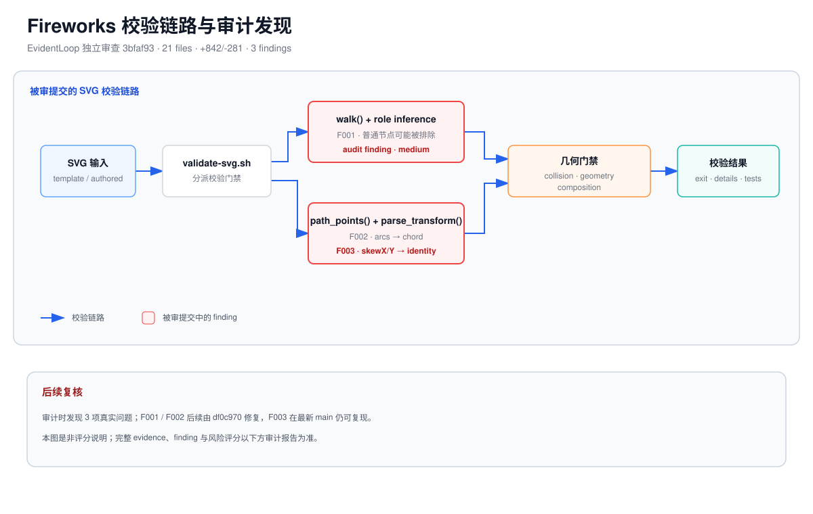

Fireworks Tech Graph 变更
共 21 个文件发生变更（+842/-281，其中 5 个二进制文件）。
该变更显著改善了 XML 与 marker 校验，并补充了基础回归测试，但碰撞检测中的图例推断、弧线近似和 transform 处理仍存在可确定的校验绕过或误报路径。建议修正这些几何问题并加入对应测试后再依赖该验证器作为交付门禁。

共 21 个文件发生变更（+842/-281，其中 5 个二进制文件）。
| 旧行 | 新行 | 代码 | |
|---|---|---|---|
| … 省略 412 行可信 diff 内容 … | |||
| 413 | + if len(points) < 2: | ||
| 414 | + continue | ||
| 415 | + if any(points_within_bounds(points, bounds) for bounds in legend_bounds): | ||
| 416 | + continue | ||
| 417 | + edge = edge_context.element | ||
| 418 | + for obstacle_context, bounds in obstacles: | ||
| 419 | + obstacle = obstacle_context.element | ||
| 420 | + if any(segment_hits_bounds(first, second, bounds) for first, second in zip(points, points[1:])): | ||
| 421 | + collisions.append( | ||
| 422 | + Collision( | ||
| 423 | + describe_element(edge), | ||
| 424 | + describe_element(obstacle), | ||
| 425 | + ) | ||
| 426 | + ) | ||
| 427 | + break | ||
| 428 | + return collisions | ||
| 429 | + | ||
| … 省略 55 行可信 diff 内容 … | |||
| 旧行 | 新行 | 代码 | |
|---|---|---|---|
| … 省略 318 行可信 diff 内容 … | |||
| 319 | + second = absolute(values[0], values[1], relative) | ||
| 320 | + end = absolute(values[2], values[3], relative) | ||
| 321 | + points.extend(sample_cubic(current, first, second, end)) | ||
| 322 | + current, previous_cubic = end, second | ||
| 323 | + previous_quadratic = None | ||
| 324 | + elif op == "Q": | ||
| 325 | + control = absolute(values[0], values[1], relative) | ||
| 326 | + end = absolute(values[2], values[3], relative) | ||
| 327 | + points.extend(sample_quadratic(current, control, end)) | ||
| 328 | + current, previous_quadratic = end, control | ||
| 329 | + previous_cubic = None | ||
| 330 | + elif op == "T": | ||
| 331 | + control = (2 * current[0] - previous_quadratic[0], 2 * current[1] - previous_quadratic[1]) if previous_quadratic else current | ||
| 332 | + end = absolute(values[0], values[1], relative) | ||
| 333 | + points.extend(sample_quadratic(current, control, end)) | ||
| 334 | + current, previous_quadratic = end, control | ||
| 335 | + previous_cubic = None | ||
| … 省略 149 行可信 diff 内容 … | |||
| 旧行 | 新行 | 代码 | |
|---|---|---|---|
| … 省略 94 行可信 diff 内容 … | |||
| 95 | + elif name == "translate" and values: | ||
| 96 | + current = (1, 0, 0, 1, values[0], values[1] if len(values) > 1 else 0) | ||
| 97 | + elif name == "scale" and values: | ||
| 98 | + current = (values[0], 0, 0, values[1] if len(values) > 1 else values[0], 0, 0) | ||
| 99 | + elif name == "rotate" and values: | ||
| 100 | + angle = math.radians(values[0]) | ||
| 101 | + rotation = (math.cos(angle), math.sin(angle), -math.sin(angle), math.cos(angle), 0, 0) | ||
| 102 | + if len(values) >= 3: | ||
| 103 | + cx, cy = values[1], values[2] | ||
| 104 | + current = multiply( | ||
| 105 | + multiply((1, 0, 0, 1, cx, cy), rotation), | ||
| 106 | + (1, 0, 0, 1, -cx, -cy), | ||
| 107 | + ) | ||
| 108 | + else: | ||
| 109 | + current = rotation | ||
| 110 | + result = multiply(result, current) | ||
| 111 | + return result | ||
| … 省略 373 行可信 diff 内容 … | |||
| 证据 | 来源 | 状态 | 关联 |
|---|---|---|---|
| 宿主语义审查结论：任意包含至少两条完整箭头路径的组件都会被误判为图例并从障碍物检测中移除。 `legend_bounds` 仅根据矩形是否完整包含两条边来推断图例，没有验证 `data-graph-role="legend"`、元素名称或图例文本；因此若普通节点内部存在两条箭头，整个节点会被排除，其他穿过该节点的箭头也无法被报告。 |
宿主语义审查 | 发现问题 | finding-001 |
| 宿主语义审查结论：椭圆弧 `A/a` 被替换为起终点之间的直线弦，可能同时产生碰撞误报和漏报。 实际弧线可能绕过组件而弦穿过组件，也可能是弧线穿过组件而弦绕过组件；注释所称的 “conservative collision check” 因而不成立，合法 SVG 箭头可能被拒绝，真实碰撞也可能通过校验。 |
宿主语义审查 | 发现问题 | finding-002 |
| 宿主语义审查结论：`skewX`、`skewY` 等合法 SVG transform 会被静默当作单位变换处理。 `parse_transform` 能解析任意变换名称，但仅实现 `matrix`、`translate`、`scale` 和 `rotate`；未识别的合法变换保持 `current = IDENTITY`，导致路径和障碍物使用错误坐标执行碰撞检测，且不会报告不支持的变换。 |
宿主语义审查 | 发现问题 | finding-003 |